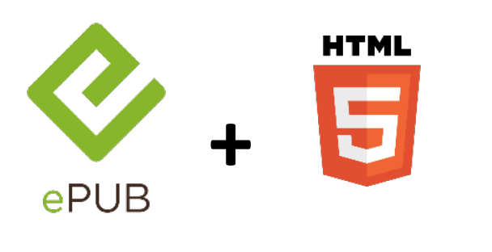
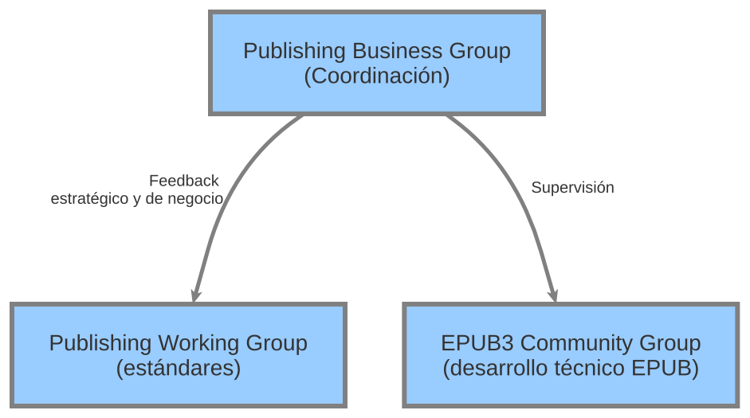
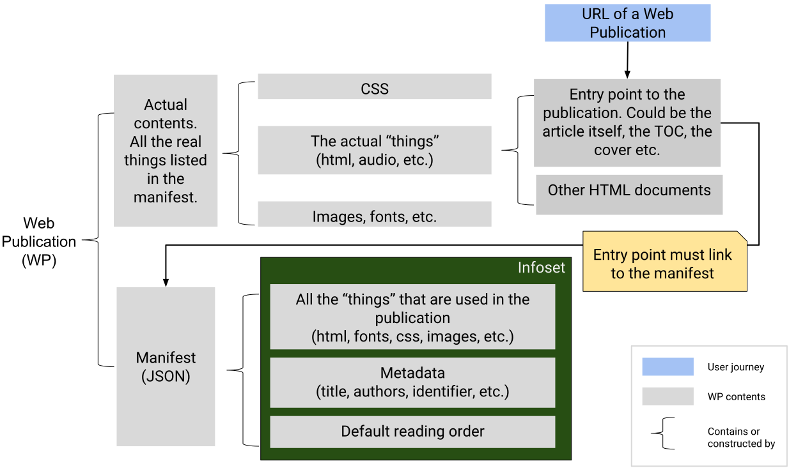

Publishing@W3C
La edición digital universitaria: estándares, visibilidad y repositorios – IX Jornadas Digitales UNE - CSIC
Madrid, 6-7 Junio 2019
Un mundo en constante cambio
30 años de Web
(pre)Historia de la Web

La "Web" en 1989

(1989) El primer boceto

La Web en 1990

(1990) WorldWideWeb

La Web crece
¿W3C?
World Wide Web Consortium
- Organismo neutro
- Fundado en 1994 por Tim Berners-Lee
- 70 personas en el Team
- 475 Miembros
- +70 Grupos del W3C (+ 1.500 investigadores)
- Relaciones con otros organismos estandarizadores
¿Qué hace el W3C?
Voice WebCGM PICS HTMLTidy Databinding WebOntology HTML CompoundDocumentFormats SPARQL WAI Web APIs Libwww PatentPolicy OWL TimedText XMLEncryption Multimodal XML RichWebClients XMLProcessing DeviceIndependence URI/URL DOM HTTP Accessibility RDF WebApplicationFormats XMLBase Jigsaw XLink I18N P3P QualityAssurance XMLKeyManagement UbiquitousWeb InkML Incubator XPath WebServices XForms CSS SOAP Mobile SMIL Rules SVG Amaya SemanticWeb MathML
Especificaciones, directrices y herramientas abiertas con la política de patentes más transparente en Internet
Tecnologías transversales
Objetivo: Una Web única para todo el mundo
Accesibilidad Internacionalización Privacidad Seguridad Interoperabilidad Eficiencia Experiencia de Usuario ...
Verticales
Telecomunicaciones (5G)
Entretenimiento (TV)
Automóvil
Datos en la Web
Web Payments
Web of Things
...
Publicaciones Digitales
'13 '14 '15 '16 '17 '18'19
- Workshops:
- necesidades en los distintos sectores (NYC)
- i18n (Tokio)
- flujo de trabajo (París)
- Lanzamiento del Digital Publishing Interest Group
'13 '14 '15 '16 '17 '18'19
- Conversación con el
International Digital Publishing Forum - Borrador de trabajo:
Requirements for Latin Text Layout and Pagination
'13 '14 '15 '16 '17 '18'19
- Borrador: Priorities for CSS
- White Paper:
Portable Documents for the Open Web Platform
'13 '14 '15 '16 '17 '18'19
- Tim Berners-Lee abre la DigiCon
W3C e IDPF anuncian su fusión
'13 '14 '15 '16 '17'18'19
- Se materializa la combinación de W3C e IDPF
- Creación de tres grupos para comenzar el trabajo
Hoja de ruta

- Desarrollar y promover EPUB3 como formato accesible de intercambio para publicaciones
- Hacia publicaciones Web nativas: online/offline, empaquetadas/distribuidas, navegador/app…
- Implementarlo sobre la Open Web platform para cubrir todas las necesidades
Organización

Publishing Working Group
Convergencia del mundo editorial y la Web en:
- Accesibilidad
- Usabilidad
- Portabilidad
- Distribución
- Archivo
- Acceso Offline
- Referencias cruzadas
'13 '14 '15 '16 '17 '18'19
- El Grupo de Trabajo publica los primeros borradores:
Una publicación...
- Puede ser un libro de texto, novela, paper, revista, cómic, boletín oficial,…
- Puede consistir en varios recursos: texto, imágenes, datos de investigación, vídeos…
- Es una unidad conceptual en la Web...una Publicación Web (WP)
Publicación Web: Requisitos
- Dirección: un URL para su acceso
- Componentes: recursos que forman parte
- Secuencia: el orden de los recursos
- Metadatos: descripción del conjunto
- Personalización: ajuste de la presentación
- Anotaciones: marcar o comentar el contenido
- Offline: UX adecuada incluso sin conexión

Anotaciones en la Web
- Modelo de datos abstracto
- Vocabulario para materializar el modelo
- Protocolo para publicar, distribuir, federar,…
Anotaciones en las Publicaciones Web
Ejemplo de cita en un texto
{
"@context": "http://www.w3.org/ns/anno.jsonld",
"id": "http://example.org/anno23",
"type": "Annotation",
"body": "http://example.org/comment1",
"target": {
"source": "http://example.org/page1",
"selector": {
"type": "TextQuoteSelector",
"exact": "anotation",
"prefix": "esto es un ",
"suffix": " que tiene algo"
}
}
}'13 '14 '15 '16 '17'18'19
-
- EPUB 3.2…
- AudioBooks “Profile” of Web Publications
- DPUB-ARIA 2.0
- BD Comics Manga Community Group
La Plataforma Web para la edición (Media Overlays)
video: brokenp87
Mejorando la UX
- CSS:
- Print Layout
- Grid Responsive
- Web Fonts (WOFF)
- Internacionalización (i18n)
STEM
Science, Technology, Engineering, Maths
- Inclusión de forma natural en la Web
Accesibilidad
Datos
...Web Payments, WoT, ML, …
¡Muchas gracias!
- martin@w3.org
- @espinr
- Esta presentación: